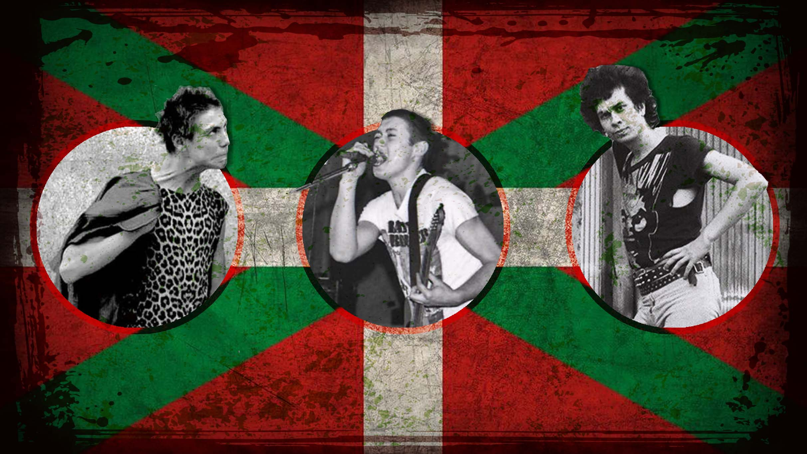

La musica en España tiene muchos años de historia, pero no seria a partir del año 74, la muerte del dictador Francisco Franco, que no empezaria mostrar su potencial. Desde La Movida Madrileña hasta el Rock Radical Vasco.

Movida Madrileña

La musica en España tiene muchos años de historia, pero no seria a partir del año 74, la muerte del dictador Francisco Franco, que no empezaria mostrar su potencial. Desde La Movida Madrileña hasta el Rock Radical Vasco.
La Movida Madrileña fue un movimiento contra-cultural surgido en España tras la dictadura franquista, todo empezaria con el concierto homenaje a Canito en el febrero de 1980

La Movida se destaco por su gran numeros de artistas, que entre ellos se destacan Alaska Y Los Pegamoides, Los Secretos, Radio Futura, Nacha Pop, Los Rebeldes o Tequila!

El Rock Radical Vasco a diferencia de la Movida Madrileña, fue la respuesta al movimiento de Madrid, usando el punk como punto de partida y forma de revolucion social
El Rock Radical Vasco se caracterizo por su respuesta social en forma de protestas y revueltas, los conocidos Katakrak en Iruña, los de Anti-Otan o los de Mili-KK

El Rock Radical Vasco se caracterizo por sus bandas que quisieron hacer un cambio en la forma de pensar y ver las cosas de sus oyentes, bandas como Kortatu, La Polla, Eskorbuto, Hertzainak, Cicatriz o Vomito marcaron un antes y después